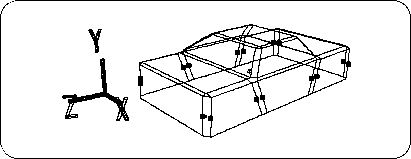
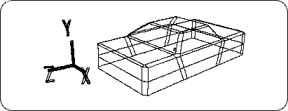
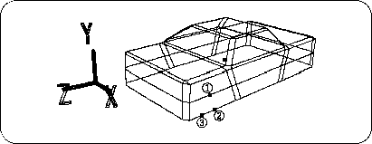

Return to previous page | Return to menu ｜ Go to next page
[Mesh] → [Vertex] → Mouse middle button (Add middle vertex)
Then, hit the middle points (16 in total) on each line segment as shown below (Figure 3-20).

[Mesh] → [Edge] → Left mouse button (Add ONE edge)
Connect the midpoints (Figure 3-21).

[Mesh] → [Vertex] → Mouse middle button (Add middle vertex)
Then hit the dots as shown below (Figure 3-22). (Do the same for front, back, left and right)

point